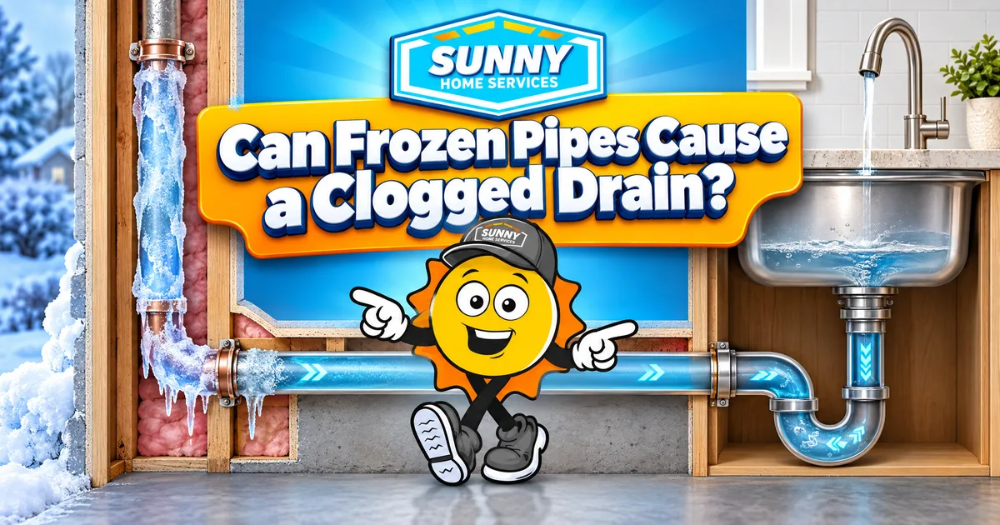

385.853.8116

Frozen pipes can cause a drain clog, and on the Wasatch Front it happens more often than most homeowners expect. Water that sits in a P-trap or a low spot in the line can freeze into a plug that acts just like a grease clog or wad of hair. Salt Lake Valley nights drop below freezing most winters, and when an inversion settles in, cold temperatures can last a week or more. Pipes in homes with little to no insulation can freeze as soon as it drops below 20°F, and drains in garages and kitchen sinks on exterior walls are usually the first to clog. Below we’ll explain why frozen pipes can block your drains and how to repair a clogged frozen drain before it turns into a burst pipe.
Frozen pipes cause a clogged drain when standing water in the line turns to ice. The few cups of water that always sit in a sink trap can freeze solid overnight and block the pipe, especially if that cabinet backs up to an outside wall. The cold also makes existing clogs worse. Grease coating a kitchen line stays soft in the summer, but it hardens in the cold and narrows the opening. Drains that move a little slow in the summer can stop completely when the first freezing week rolls around.
Is your drain clogged or frozen? You can usually tell by when it stopped working. A frozen drain clogs suddenly, often the morning after a hard freeze or winter snowstorm. A clogged drain tends to get slower over days or weeks before it backs up. Where the problem shows up can also give you a clue into the cause. If the two nearby drains that run through the garage stop at once, ice is likely the cause. If only the upstairs bedroom sink is slow, it’s more likely to be hair and soap buildup. Checking nearby faucets helps narrow down the source. If the hot and cold supply on the same wall is barely trickling, the pipes in that section are cold enough to freeze. Frost on any exposed pipe in a crawl space or unfinished basement can confirm you’re dealing with ice.
Stop running water the moment you notice a clogged drain. Extra water piles onto the ice or backs up into your tub or basement floor drain if it has nowhere to go. If the dishwasher or washing machine shares the same line, hold off on using those as well. Turn on a faucet near the slow drain and see what happens. If nothing comes out, your supply lines have likely frozen as well, and there’s a chance a pipe has cracked. Find your main water shutoff and make sure you can turn it in case a pipe starts leaking as it thaws. Adding warmth to the pipe can help the ice start to melt. Bump up the thermostat a few degrees and leave the sink cabinet doors open so heated air can reach the plumbing.
You can often repair a drain that’s frozen or clogged by warming the pipe slowly until the ice melts. Here’s how: Step one: Open up access to the pipe. Clear out the sink cabinet or remove the access panel so you can reach the cold section. Step two: Warm the pipe with gentle heat. Use a hair dryer on its low setting or a heating pad to warm the frozen section. Start at the drain end and work toward the frozen spot so melting water has somewhere to go. Step three: Pour warm tap water into the drain. Running warm tap water can melt the ice from the inside. Avoid pouring boiler water down the drain, which can loosen PVC joints and crack porcelain sinks or toilet bowls. Step four: Flush the line. Once it starts draining, run hot water through the line to clear out leftover slush. Step five: Watch how it drains. If it’s still slow after it thaws, there’s likely a regular clog sitting where the ice was that needs hydro jetting or drain cleaning. Never put a torch or propane heater anywhere near your pipes. Sudden high heat can split a frozen pipe or start a fire inside the wall. If gentle heat isn’t working, call a professional for help instead.
Not sure where to start? A technician can look at it the same day and tell you what it needs.
Book NowCall a plumber when the frozen section is inside a wall, under a slab, or anywhere you can’t reach safely. You should also call if a drain hasn’t thawed after an hour or two of applying gentle heat. Book an emergency repair if you notice:
The best way to prevent frozen and clogged drains this winter is to keep cold air off your pipes. A few preventative steps in early fall help protect your pipes before temperatures drop along the Wasatch Front. Here’s where to start:
At Sunny Home Services, we handle frozen pipe repair across Salt Lake, Utah, Davis, and Weber counties. We can be there the same day a cold snap hits to thaw your pipes, clear your drains, and check for cracks before they leak. We grew up in these winters, so we know which pipes freeze first in Utah homes. Give us a call or book online, and we’ll get your drains moving again.


When you need HVAC and plumbing services along the Wasatch Front, count on Sunny Home Services for fast, honest, technology-driven solutions. With same-day response, upfront flat-rate pricing, and heating, cooling, and plumbing all under one roof, you’ll have a company you can trust for the whole home.